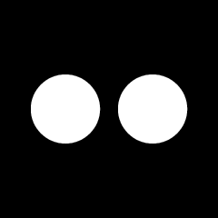

这是开源原始动画的浏览器预览，供筛选风格。当前展示 Otto v1.4.0 资源；不是已经刷入设备的效果，也不代表实机帧率。

待机 / neutral
原始画布 240 × 240，和设备分辨率一致。此处只做等比放大，无拉伸或裁切。
选型重点：自然眨眼、视线有停留、动作有起落、切换不跳脸。循环素材的重复感和能否及时打断，需要与实时引擎对比。
资源来源：Otto GIF · MIT 许可。当前提交：4a666924e8e4e2bb55fb9d3167211bb936224abf。
RoboEyes 官方源码及演示：自动眨眼、随机看向、连续表情过渡，适合长期待机。
Grobot 动态编辑器：弹簧运动与非对称眼形，可直接试调；当前默认外观偏圆环。